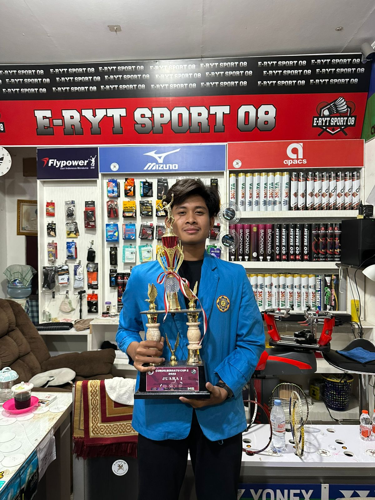
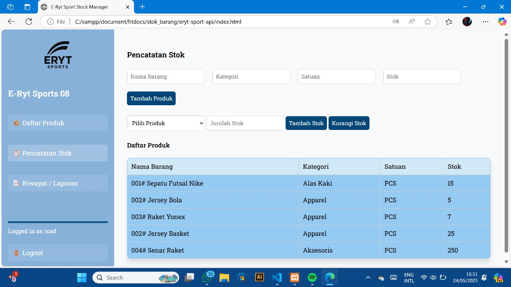

Sistem stok barang
Membuat aplikasi berbasis website untuk mencatat dan memantau stok barang pada Toko E-ryt Sport.
Slot foto 1

Slot foto 2

Saya lulusan Sistem Informasi Universitas Pamulang angkatan 2026. Selama kuliah, saya membuat sistem stok barang dan sistem keuangan digital berbasis website, serta memberikan penyuluhan serangan cyber kepada masyarakat. Saya senang mengolah data agar bisa membantu pengambilan keputusan..